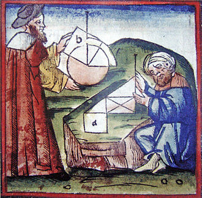
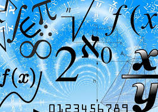
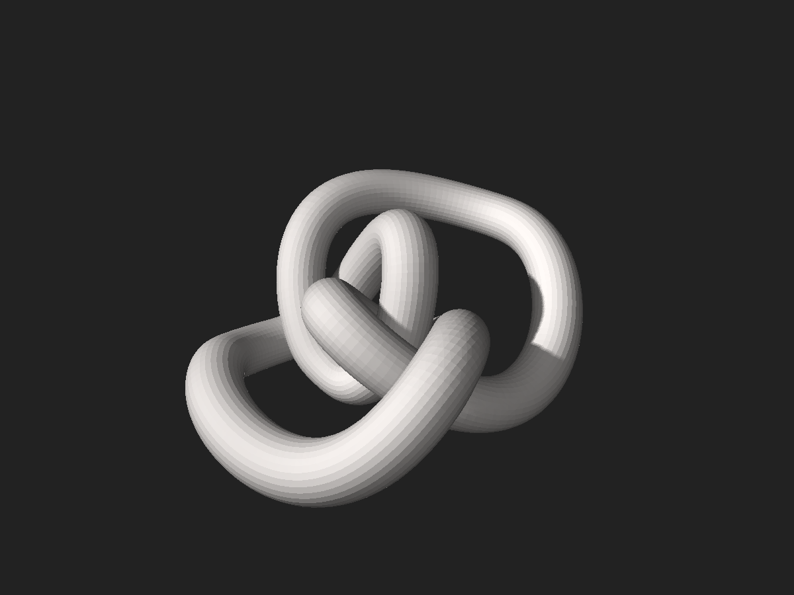
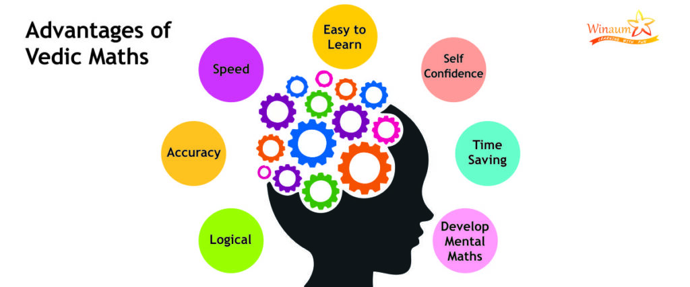

Algebra
Dive into the fundamental language of mathematics with Algebra.
Uncover the secrets of equations, variables, and abstract structures that form the backbone of countless mathematical concepts.
Algebra, branch of mathematics in which arithmetical operations and formal manipulations are applied to abstract symbols rather than specific numbers.
The notion that there exists such a distinct subdiscipline of mathematics, as well as the term algebra to denote it, resulted from a slow historical development.
This article presents that history, tracing the evolution over time of the concept of the equation, number systems, symbols for conveying and manipulating mathematical statements, and the modern abstract structural view of algebra.
For information on specific branches of algebra, see elementary algebra, linear algebra , and modern algebra.
Geometry 
Experience the visual elegance of Geometry.
Geometry, the branch of mathematics concerned with the shape of individual objects, spatial relationships among various objects, and the properties of surrounding space.
It is one of the oldest branches of mathematics, having arisen in response to such practical problems as those found in surveying, and its name is derived from Greek words meaning “Earth measurement.”
Eventually it was realized that geometry need not be limited to the study of flat surfaces (plane geometry) and rigid three-dimensional objects (solid geometry) but that even the most abstract thoughts and images might be represented and developed in geometric terms.
From shapes and angles to the intricate patterns in nature, discover the mathematical principles that govern the physical world around us.
For information on specific branches of geometry, see Euclidean geometry, analytic geometry projective geometry differential geometryand non-Euclidean geometries.
Calculus

Embark on a journey of continuous change and motion with Calculus.
Unravel the mysteries of limits, derivatives, and integrals, and witness how these concepts underpin physics, engineering, and much more.
Calculus, branch of mathematics concerned with the calculation of instantaneous rates of change (differential calculus) and the summation of infinitely many small factors to determine some whole (integral calculus).
Two mathematicians, Isaac Newton of England and Gottfried Wilhelm Leibniz of Germany, share credit for having independently developed the calculus in the 17th century.
Calculus makes it possible to solve problems as diverse as tracking the position of a space shuttle or predicting the pressure building up behind a dam as the water rises.
Calculus is now the basic entry point for anyone wishing to study physics, chemistry, biology, economics, finance, or actuarial science.
Number Theory 
Delve into the realm of integers with Number Theory.
Explore the properties and relationships of numbers, uncovering the hidden patterns and connections that make this branch a cornerstone of pure mathematics.
Number theory, branch of mathematics concerned with properties of the positive integers (1, 2, 3, …).
Sometimes called “higher arithmetic,” it is among the oldest and most natural of mathematical pursuits.
Modern number theory is a broad subject that is classified into subheadings such as elementary number theory, algebraic number theory, analytic number theory, geometric number theory, and probabilistic number theory.
These categories reflect the methods used to address problems concerning the integers.
Until the mid-20th century, number theory was considered the purest branch of mathematics, with no direct applications to the real world
Statistics

Navigate the world of uncertainty and probability with Statistics.
From data analysis to making informed decisions, grasp the essential tools for understanding and interpreting information in various fields.
Statistics, the science of collecting, analyzing, presenting, and interpreting data.
Whenever statisticians use data from a sample-i.e., a subset of the population—to make statements about a population, they are performing statistical inference.
Fields such as health care, biology, chemistry, physics, education, engineering, business, and economics make extensive use of statistical inference.
Methods of probability were developed initially for the analysis of gambling games.
Some of these methods are used primarily for single-variable studies, while others, such as regression and correlation analysis, are used to make inferences about relationships among two or more variables.
Topology 
Topology, branch of mathematics, sometimes referred to as “rubber sheet geometry,” in which two objects are considered equivalent if they can be continuously deformed into one another through such motions in space as bending, twisting, stretching, and shrinking while disallowing tearing apart or gluing together parts.
The area of topology dealing with abstract objects is referred to as general, or point-set, topology.
The main topics of interest in topology are the properties that remain unchanged by such continuous deformations. Topology, while similar to geometry, differs from geometry in that geometrically equivalent objects often share numerically measured quantities, such as lengths or angles, while topologically equivalent objects resemble each other in a more qualitative sense.
General topology overlaps with another important area of topology called algebraic topology.
These areas of specialization form the two major subdisciplines of topology that developed during its relatively modern history.
Vedic 
Engage in the art of reasoning with Logic.
Uncover the principles that guide valid arguments and deductions, forming the basis for mathematical proofs and critical thinking.
Vedic maths is a system of mathematics that was discovered by an Indian mathematician, Jagadguru Shri Bharathi Krishna Tirthaji during A.D. 1911 and 1918.
He printed his findings in a Vedic Mathematics book - Tirthaji Maharaj.
Vedic mathematics is also called mental mathematics in the mathematical world.
We can say that the brain's capacity and its speed of calculations increases fivefold with the practice of Vedic maths.
It consists of 16 Sutras called Formulae and 13 sub-sutras called Sub Formulae, which can be applied to the solving of problems in arithmetic, algebra, geometry, calculus, conics, etc